A list of dinosaurs and their description
Triceratops
The three-horned face
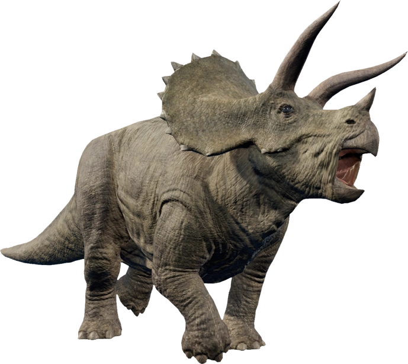
- Herbivor
- Lived ~67 million years ago
- It weighed ~5500kg
- It was ~9m long
- It was found in North America
Ankylosaurus
stiff lizard
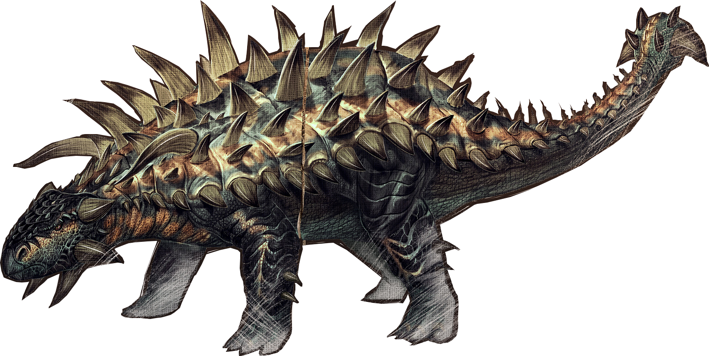
- Herbivor
- Lived ~74 million years ago
- It weighed ~4000kg
- It was ~7m long
- It was found in North America
Tyrannosaurus
tyrant lizard

- Carnivor
- Lived ~66 million years ago
- It weighed ~7000kg
- It was ~12m long
- It was found in North America and Asia
Spinosaurus
thorn lizard
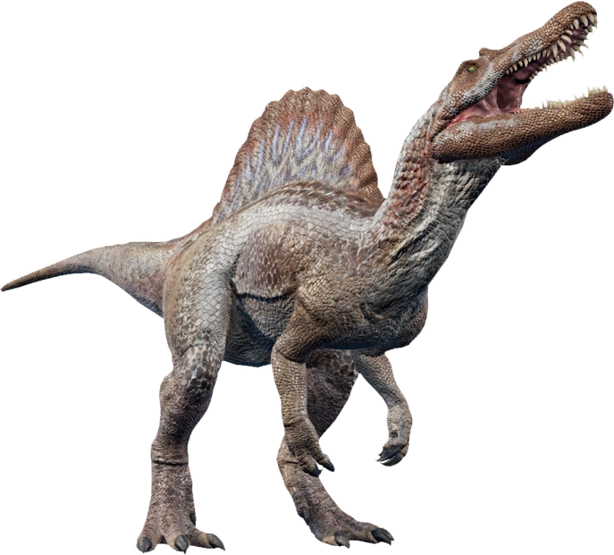
- Carnivor
- Lived ~90 million years ago
- It weighed ~4000kg
- It was ~18m long
- It was found in Africa and Brazil
Iguanodon
iguana tooth
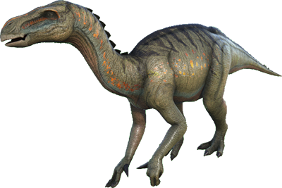
- Herbivor
- Lived ~130 million years ago
- It weighed ~4000kg
- It was ~10m long
- It was found in Europe, North America, Asia and Africa
Velociraptor
The raptor
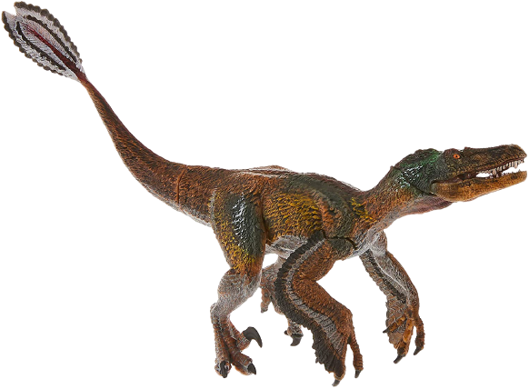
- Herbivor
- lived ~80 million years ago
- It weighed ~15kg
- It was ~2m long
- It was found in Asia
Brachiosaurus
arm lizard

- Carnivor
- Lived ~150 million years ago
- It weighed ~23000kg
- It was ~23m long
- It was found in North America
Dilophosaurus
Two-combed lizard
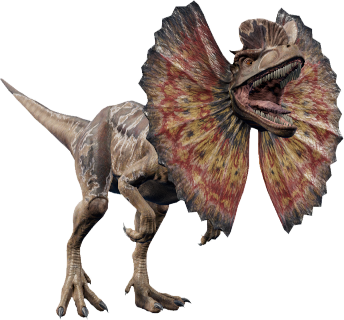
- Carnivor
- Lived 200 million years ago
- It weighed ~500kg
- It was ~6m long
- It was found in North America
Parasaurolophus
Bird basin dinosaur
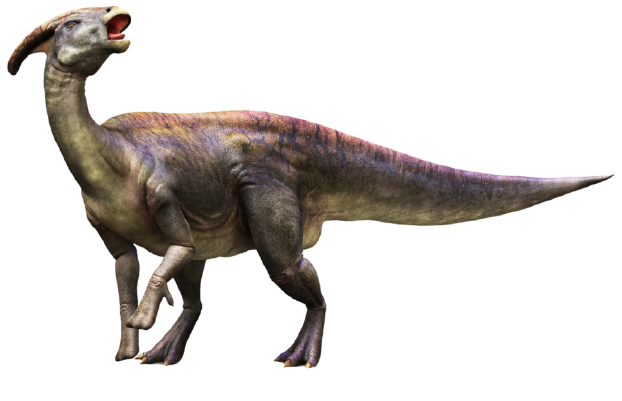
- Herbivor
- It lived ~75 million years ago
- It weighed ~2500kg
- It was ~10m long
- It was found in North America
Gallimimus
Rooster imitator
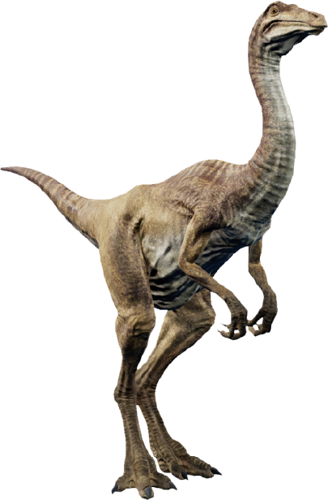
- Nutrition unclear
- It lived ~70 million years ago
- It weighed ~230kg
- It was ~6m long
- It was found in Mongolia
Therizinosaurus
Scythe Lizard
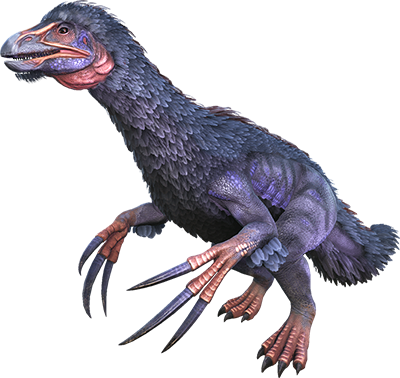
- Herbivor
- It lived ~70 million years ago
- It weiged ~5000kg
- It was ~9m long
- It was found in Mongolia
Pteranodon
Toothless wing
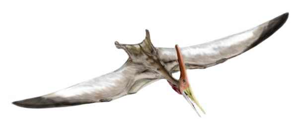
- Carnivor
- It lived ~80 million years ago
- It weighed ~16kg
- It was ~1,80m long
- It was found in North America
Mosasaurus
Lizard from the Maas
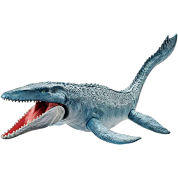
- Carnivor
- It was a sea creature
- It lived ~70 million years ago
- It weighed ~14000kg
- It was ~15m long
- It was found in Europe and in North America
Plesiosaurus
Almost lizard
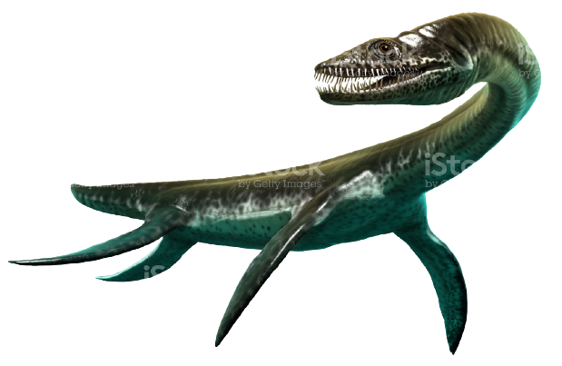
- Carnivor
- It was a sea creature
- It lived ~70 million yeard ago
- It weighed ~450kg
- It was up to ~15m long
- It was found worldwide
Megalodon
Mega lizard
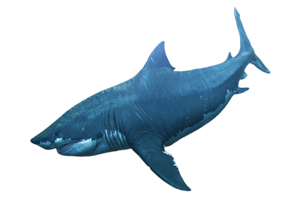
- Carnivor
- It was a sea creature
- It lived ~5 million years ago
- It weighed ~800kg
- It was ~20m long
- It was found worldwide